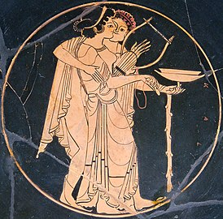

Алкоголизм
| Алкоголизм (синдром зависимости от алкоголя) | |
|---|---|
|  музыкант, поддерживающий пьяную участницу пира изображение на античной вазе | |
| МКБ-11 | 6C40.2 |
| МКБ-10 | F10.2 |
| МКБ-9 | 303 |
| OMIM | 103780 |
| DiseasesDB | alcoholism |
| MedlinePlus | 000944 |
| eMedicine | article/285913 |
| MeSH | D000437 |
| Медиафайлы на Викискладе | |
{kind=link}
Алкоголи́зм (от араб. الكحل [al-koḥl] — «порошкообразная сурьма»[1][2][нет в источнике]), также хрони́ческий алкоголи́зм, хрони́ческая алкого́льная интоксикация, этили́зм, алкогольная токсикомания[3][4] — хроническое психическое прогредиентное заболевание[5][6][7], разновидность токсикомании[8], характеризующееся пристрастием к алкоголю (этиловому спирту), с психической и физической зависимостью от него[9]. Алкоголизм характеризуется потерей контроля над количеством выпиваемого алкоголя, ростом толерантности к алкоголю (нарастание доз спиртного, требующихся для достижения удовлетворения), абстинентным синдромом, токсическим поражением органов, а также провалами в памяти на отдельные события, происходившие в период опьянения[10].
Всемирной организацией здравоохранения (ВОЗ) в 1979 году термин «алкоголизм» изъят из Международной классификации болезней (МКБ), и заменён термином «синдром алкогольной зависимости»[11]. В МКБ-10 алкоголизм обозначается как «синдром зависимости» (F10.2), входящий в рубрику «психические и поведенческие расстройства, вызванные употреблением алкоголя» (F10)[12], а в американской классификации DSM-5 как «расстройство, вызванное употреблением алкоголя» или «расстройство употребления алкоголя» (alcohol use disorder).
Человека, страдающего алкоголизмом, называют «алкоголиком».
Уже в XIX веке считалось, что с повышением благосостояния населения начинает расти и алкоголизм[13]. Всемирная организация здравоохранения считает, что тенденция заболеваемости алкоголизмом в мире постоянно растёт, если в 2000 году людей, больных алкоголизмом, в мире было около 140 миллионов, то в 2010 году — уже около 208 миллионов: при такой тенденции к 2050 году число людей, страдающих от алкогольной зависимости, в мире может превысить 500 миллионов человек из 9,5 млрд населения[нет в источнике][14][15][16], то есть 1 из 19.
{kind=link}
Медицинские определения
[править | править код]Журнал Американской медицинской ассоциации (Journal of the American Medical Association) определяет алкоголизм как «первичное, хроническое заболевание, характеризующееся нарушением контроля над приёмом спиртного, пристрастием к алкоголю, употреблением алкоголя, несмотря на отрицательные последствия, и искажением мышления»[17].
DSM-IV (стандарт диагностики в психиатрии) определяет злоупотребление алкоголем как повторяющееся употребление, несмотря на рецидивирующие отрицательные последствия[18].
По данным APA Dictionary of Psychology, алкоголизм — это повседневное название для термина алкогольная зависимость. Следует учесть, что существует спор о том, какая зависимость здесь имеется в виду: физическая (характеризуется синдромом абстиненции), психологическая (основана на подкреплении условного рефлекса) или и та, и другая.
{kind=link}
История изучения
[править | править код]Термин «хронический алкоголизм» был впервые применён в 1849 году шведским врачом и общественным деятелем М. Гуссом (M. Hüss), обозначившим так совокупность патологических изменений, происходящих в организме человека при длительном, неумеренном употреблении спиртных напитков[10][19].
Долгое время, однако, не делалось различия между пьянством (неумеренным употреблением спиртных напитков) и алкоголизмом (болезнью). В XIX и начале XX веков алкогольная зависимость в целом называлась дипсомания, но сейчас этот термин имеет иной смысл. Представление об алкоголизме как о болезни было закреплено трудами Э. Крепелина, К. Бонгеффера, Э. Блейлера, С. С. Корсакова, С. Г. Жислина, И. В. Стрельчука[10].
Алкоголизм был утверждён ВОЗ как болезнь в 1952 году[20].
Эпидемиология
[править | править код]На протяжении всего XX столетия наблюдалась устойчивая тенденция к увеличению числа людей, болеющих алкоголизмом. Например, средневзвешенный ежегодный показатель распространения алкоголизма в 15 экономически развитых странах составлял 0,3 на 1000 населения в 1900—1929 годах, 12,3 — в 1956—1975 годах; только с 1930 по 1965 годы число больных алкоголизмом увеличилось более чем в 50 раз[21].
Крупные эпидемиологические исследования алкогольной зависимости проводятся с 1980-х годов; они показывают, что распространённость алкоголизма и пьянства в различных странах значительно различается. Так, первые исследования эпидемиологии алкоголизма в развитых странах показали, что алкоголизм наиболее распространён во Франции, далее следовали США, Швейцария и Швеция. Тем не менее со временем показатели менялись; так, в США потребление алкоголя снизилось, а в странах бывшего СССР и Японии — возросло[16][22].
К началу XXI века в мире производилось свыше 200 млрд литров алкогольных напитков в год; во всех развитых странах большинство населения в возрасте старше 15 лет употребляло спиртные напитки, при этом около 1/6 мужчин и около 1/13 женщин употребляли алкоголь ежедневно[10]. Потребление алкоголя на душу населения в развитых странах составляет 7—14 литров в год[23]; в развивающихся странах этот показатель меньше, однако отмечается тенденция к его росту. Потребление алкоголя в России в 2005 году составило 11 литров на душу населения; число больных алкоголизмом в России в 2009 году составило 1523,3 на 100 тыс. населения[24].
По данным RLMS-HSE, 34,9 % российских мужчин и 21,8 % российских женщин в 2010 году были трезвенниками; доля трезвенников наиболее высока в возрастной группе 61 год и старше (34,9 %), меньше всего непьющих оказалось в возрастной группе 26—40 лет (19 %)[25]. Основная группа риска — люди в возрасте 35—65 лет.
Фармакодинамика и метаболизм
[править | править код]Действующий компонент алкогольных напитков — этанол — быстро всасывается в желудочно-кишечном тракте, проникает в мозг человека, вступает в контакт с нервными клетками[26]. Концентрация этанола в крови достигает максимума через 45—90 минут после употребления спиртного напитка[10]. Этанол выводится из организма в неизменённом виде лёгкими, почками, молочными и потовыми железами и с калом, а также путём биотрансформации, которая происходит в основном в печени. В течение первых суток продолжается разрушение и выведение алкоголя из организма:
- Окисление в цитозоле: C2H5OH + 2HAD → C2H4O + 2HAD°H — главный путь выхода у здоровых людей, метаболизирующий 70-80 % этанола.
- Окисление с помощью микросомальной этанолокисляющей системы печени.
- Наконец, окисление с помощью каталазы, оксидаз и пероксидаз[англ.] тканей. У здоровых людей он составляет 15 % метаболизма этанола, у больных алкоголизмом его роль возрастает.
Завершающий путь ацетальдегида: превращение при помощи альдегиддегидрогеназы в ацетат, который при участии ацетил-КоА окисляется до углекислоты и воды: C2H4O → ацетат → CO2 + Н2O + энергия[27].
Скорость окисления у здорового человека постоянна и составляет приблизительно 0,1 г чистого этанола на кг массы человека в час. До 10 % принятого алкоголя выделяется в неизменном виде через почки и с дыханием[10].
Естественным способом защиты организма от попадания чрезмерного количества алкоголя является рвотный рефлекс, который ослабевает по мере развития болезни[10].
Этиология
[править | править код]Безусловно, одной из главных причин принятия алкоголя являются такие его воздействия на человека, как эйфория, сонливость, ложносогревающие свойства и другие[28]. Существует много взглядов на этиологию алкоголизма. Так, например, W. Sudduth (1977) полагал, что основа развития заболевания происходит из-за влияния этанола на желудочно-кишечный тракт. По его теории, это происходит потому, что этанол подавляет всасывание полезных веществ, зато усиливает всасывание токсина. Постепенно токсинов становится всё больше, и тут этанол становится единственным антибактериальным и нейроблокирующим агентом. Он временно улучшает состояние и определяет «компульсивное влечение». Так возникает замкнутый круг. Как пишет Пятницкая, «Именно токсический порочный круг объясняет неврологическую и генетическую симптоматику алкоголизма»[28].
Сегодня уделяется внимание влиянию острого и хронического потребления алкоголя на функцию нейрохимических систем мозга, например, значительное внимание в механизмах действия этанола на ЦНС уделяют γ-аминомасляной кислоте — ГАМК[27]. И. П. Анохина (1995) считает, что общим звеном, для формирования зависимости является влияние вещества (по её мнению, тут могут быть и другие наркотики) на катехоламиновую, в частности на дофаминовую, медиацию в области локализации систем подкрепления мозга[29].
Но, несмотря на то, что механизм самого заболевания неясен, основным источником болезни служат спиртосодержащие напитки и те действия, что они оказывают. Кроме того, многое зависит от биологических, психологических и социальных факторов.
- Социальные факторы. Ещё в XIX веке было доказано, что с повышением благосостояния уровень алкоголизации населения увеличивается. 10 % мужчин с алкогольной зависимостью и 50 % женщин с алкогольной зависимостью состоят в браке с людьми, имеющими алкогольную зависимость. Способствуют пьянству, а затем и алкоголизму, многие традиции[30]. Велика вероятность развития алкогольной зависимости у женщин из числа сексуальных меньшинств[31]. Например, злоупотребление алкоголем у лесбиянок и бисексуалок широко распространено по сравнению с гетеросексуальными женщинами, в целом в США алкоголизм значительно выше у гомосексуалов, особенно женщин[32].
- Биологическая предрасположенность к пьянству (или физиологические факторы). Существуют и существовали и такие воззрения[33]. Гены, вариации и мутации которых ассоциированы с уровнем потребления алкоголя и риском алкоголизма: ADH1B[34]. Проведённое в 2020 году исследование геномов 435 тыс. человек помогло выявить 29 генетических факторов, располагающих к алкоголизму[35].
- Психологический фактор. Являясь депрессантом ЦНС, алкоголь издревле использовался человеком и, за исключением некоторых религий, был даже в центре таинств. Если на ранних этапах жизни человека было невозможно индивидуальное пьянство, то с прогрессом цивилизации оно приобретает своё место. Слабая, плохо организованная личность всё больше теряется в этом мире, протягивая руки к бутылке[36]. Тяжёлой формой является алкоголизация на фоне определённого психиатрического заболевания[37].
Неразработанным остаётся вопрос о патологии болезни, хотя были попытки изучить алкоголизм исходя из моноэтиологического принципа; всё этo оказалось мнимым. У одних людей достаточно быстро возникают психотические расстройства, а у других процесс является медленным, деструктивноорганическим[38]. Ведётся изучение влияния алкоголя на конкретные органы. В результате многогранных исследований получил освещение единственный радикал разнообразной патологии — гипоадренергия алкоголиков[39]. Нераскрытым остаётся и влияние зависимости от конкретной нейрональной системы[40]. Судить можно лишь по тому, какие органы подвергаются наибольшей хронической интоксикации.
Алкоголизм отличается нарастающей симптоматикой психических нарушений и специфических алкогольных поражений внутренних органов. Патогенетические механизмы воздействия алкоголя на организм опосредованы несколькими типами действия этанола на живые ткани и, в частности, на организм человека.
По мнению И. П. Анохиной, основным патогенетическим звеном психоактивного действия алкоголя является активация различных нейромедиаторных систем, в особенности катехоламиновой системы[29]. На различных уровнях центральной нервной системы эти вещества (катехоламины и эндогенные опиаты) определяют различные эффекты, такие как повышение порога болевой чувствительности, формирование эмоций и поведенческих реакций. Нарушение деятельности этих систем вследствие хронического потребления алкоголя вызывает развитие алкогольной зависимости, абстинентного синдрома, изменение критического отношения к алкоголю и пр.[41]
При окислении алкоголя в организме образуется ядовитое вещество — ацетальдегид, вызывающее развитие хронической интоксикации организма. Особенно сильное токсическое действие ацетальдегид оказывает на стенки сосудов (стимулирует прогрессию атеросклероза), ткани печени (алкогольный гепатит), ткани мозга (алкогольная энцефалопатия).
Стадии болезни
[править | править код]Алкоголизм характеризуется сильной психической и физической зависимостью от алкоголя (алкогольная зависимость). Алкоголизм как патология проходит несколько этапов развития, которые характеризуются постепенным увеличением алкогольной зависимости, уменьшением возможности самоконтроля в отношении употребления спиртных напитков, а также прогрессивным развитием различных соматических нарушений, вызванных хронической интоксикацией алкоголем.
Наиболее простая дифференциация алкоголизма основывается на присутствии клинических и психических признаков алкогольной зависимости, а также частоте и количестве употребляемого алкоголя. Различают следующие группы лиц:
- Лица, не употребляющие алкоголь
- Лица, умеренно потребляющие алкоголь
- Лица, злоупотребляющие алкоголем (развитие алкогольной зависимости)
- Без признаков алкоголизма
- С начальными признаками алкоголизма (утрата ситуационного и дозового контроля, запои)
- С выраженными признаками алкоголизма (регулярные запои, поражение внутренних органов, психические нарушения, свойственные алкоголизму)
Алкогольная зависимость развивается от случайных эпизодов употребления алкоголя до развития тяжёлого алкоголизма[42].
Часто больные алкоголизмом (на всех стадиях) отрицают или недооценивают свою болезнь. Это явление получило название алкогольной анозогнозии[43].
В рамках представления об алкоголизме как о прогредиентном хроническом заболевании в развитии алкоголизма различают три основные стадии.
Первая стадия
[править | править код]На первой стадии алкоголизма человек с алкогольной зависимостью часто испытывает труднопреодолимое желание употребить алкоголь. При невозможности употребления спиртного чувство влечения на время проходит, однако в случае употребления алкоголя контроль по отношению к количеству выпитого резко снижается. На этой стадии заболевания состояние опьянения нередко сопровождается чрезмерной раздражительностью, агрессивностью и даже (ещё редкими) случаями потери памяти в состоянии опьянения. У алкоголика пропадает критическое отношение к пьянству и появляется тенденция оправдать каждый случай потребления алкоголя. В конце первой стадии начинается заметный прирост толерантности (переносимости алкоголя). Первая стадия алкоголизма постепенно переходит во вторую.
Вторая стадия
[править | править код]Вторая стадия алкоголизма характеризуется значительным ростом толерантности к алкоголю, постепенно достигая наивысшей планки — «плато толерантности». Постепенно человек полностью теряет контроль над употребляемой выпивкой (уменьшение контроля), продолжительность эйфории от опьянения также значительно уменьшается и в конце второй стадии может не наступать вовсе. На этой стадии появляется физическая зависимость от алкоголя и тенденция регулярно принимать в одиночку большие дозы спиртного. Именно на второй стадии возникает абстинентный алкогольный синдром, сопровождающийся потливостью, головной болью, жаждой, раздражительностью, проблемами со сном, болями в области сердца, тремором конечностей или всего тела. Алкоголик постепенно вовсе перестаёт оправдывать своё употребление, проявляя безразличие ко всему, что не касается алкоголя. Возникает замкнутый круг зависимости — многодневное пьянство, которое крайне сложно прервать. Резкое прерывание запоя (или, по ранее употребляющейся классификации, псевдозапоя), а также попытки окружающих ограничить больного от спиртного без медицинской помощи могут привести к различным осложнениям, вплоть до металкогольных психозов. На второй стадии алкоголизма у больного начинает отчётливо проявляться поражение внутренних органов и центральной нервной системы (к примеру, снижение полового влечения, недержание мочи и т. д.).
Третья стадия
[править | править код]Тяга к алкоголю усиливается, пропорционально снижается контроль. Организму требуется уже незначительное количество спиртосодержащих напитков для опьянения, при этом нарушения в психике всё больше приводят к амнезии. Психическая, физическая и социальная деградация увеличивается. Постепенно возникает временное состояние, приближенное к понятию «истинного запоя» — человек уже бессознательно испытывает нестерпимое влечение к выпивке. Учитывая, что для опьянения достаточно малой дозы спиртного (рюмка и меньше), такой запой иногда заканчивается лишь полным истощением организма. К этому времени нарушения психики и внутренних органов становятся необратимыми, наступает полная алкогольная деградация. Запой, прерванный без соответствующей медицинской помощи, часто сопровождается металкогольными психозами и может привести даже к смерти.
При малопрогредиентном (стационарном) течении алкоголизма прогрессирование основных симптомов болезни значительно менее выражено[10].
Диагностические признаки
[править | править код]Для установления диагноза «алкоголизм» в России определяют наличие у больного нижеперечисленных симптомов[44]:
- отсутствует рвотная реакция на приём большого количества алкоголя;
- потеря контроля над количеством выпитого;
- частичная ретроградная амнезия;
- наличие абстинентного синдрома;
- запойное пьянство.
Более точную диагностическую шкалу устанавливает МКБ-10:
Острое опьянение
[править | править код]Диагноз является основным лишь тогда, когда интоксикация не сопровождается более стойкими расстройствами. Необходимо также учитывать
- уровень дозы;
- сопутствующие органические заболевания;
- социальные обстоятельства (поведенческая расторможенность на праздниках, карнавалах);
- время, прошедшее после употребления вещества.
Этот диагноз исключает алкоголизм. В ту же категорию попадает (дополнительный знак 7, то есть F10.07) патологическое опьянение.
Употребление с вредными последствиями
[править | править код]Модель употребления алкоголя, вредящая здоровью. Вред может быть физическим (гепатит и пр.) или психическим (например, вторичная депрессия после алкоголизации). Диагностические признаки:
- Наличие непосредственного ущерба, причинённого психике или физическому состоянию потребителя;
- Дополнительно подтверждает диагноз наличие негативных социальных последствий.
Употребление со вредными последствиями не должно диагностироваться при наличии более специфической формы расстройства, связанной с алкоголем (см. ниже). Этот диагноз также исключает алкоголизм.
Синдром зависимости
[править | править код]Сочетание физиологических, поведенческих и когнитивных явлений, при которых употребление алкоголя начинает выходить на первое место в системе ценностей больного. Для диагностики необходимо наличие не менее 3 из признаков, возникавших в течение года:
- Сильная потребность или необходимость принять алкоголь.
- Нарушение способности контролировать употребление алкоголя, то есть начало употребления, окончание и/или дозировку.
- Состояния отмены (см. F10.3 и F10.4).
- Повышение толерантности.
- Прогрессирующее забывание альтернативных интересов в пользу алкоголизации, увеличение времени, необходимого для приобретения, приёма алкоголя или восстановления после его действия.
- Продолжение употребления алкоголя, несмотря на очевидные вредные последствия, такие как повреждение печени, депрессивные состояния после периодов интенсивного употребления вещества, снижение когнитивных функций вследствие алкоголизации (следует определять, сознавал ли и мог ли сознавать больной природу и степень вредных последствий).
Синдром зависимости для большинства врачей — достаточная причина для постановки диагноза «алкоголизм», однако постсоветская психиатрия более строга[44].
Диагноз F10.2 может быть уточнён пятым знаком:
0 — в настоящее время воздержание;
1 — в настоящее время воздержание, но в условиях, исключающих употребление (в госпитале, тюрьме и т. д.);
2 — в настоящее время под клиническим наблюдением, на поддерживающей или заместительной терапии (например, ГОМК);
3 — в настоящее время воздержание, но на лечении вызывающими отвращение или блокирующими лекарствами (тетурам, соли лития);
4 — в настоящее время употребление этанола (активная зависимость);
5 — постоянное употребление;
6 — эпизодическое употребление.
Состояния отмены
[править | править код]Группа симптомов различного сочетания и степени тяжести, проявляющаяся при полном или частичном прекращении приёма алкоголя после неоднократного, обычно длительного и/или массированного (в высоких дозах) употребления. Начало и течение синдрома отмены ограничены во времени и соответствуют дозам, непосредственно предшествующим воздержанию.
Для синдрома отмены характерны психические расстройства (например, тревога, депрессия, расстройство сна). Иногда они могут вызываться условно-закреплённым стимулом при отсутствии непосредственно предшествующего употребления. Синдром отмены является одним из проявлений синдрома зависимости.
Состояние отмены с делирием (F10.4) выделяют вследствие другой клинической картины и на основании кардинальной разницы в механизме его возникновения.
Нарушения здоровья при алкоголизме
[править | править код]Алкоголь обладает токсическим воздействием на мембраны клеток, нарушает деятельность нейромедиаторных систем, расширяет сосуды и увеличивает теплоотдачу, повышает выделение мочи и секрецию соляной кислоты в желудке.
Алкогольное поражение внутренних органов (алкогольная висцеропатия)
[править | править код]Длительное злоупотребление алкоголем приводит к необратимым изменениям внутренних органов. На фоне хронического алкоголизма развиваются такие заболевания, как алкогольная кардиомиопатия, алкогольный гастрит, алкогольный панкреатит, алкогольный гепатит, алкогольная нефропатия, алкогольная энцефалопатия, различные типы анемии, нарушения иммунной системы, риск кровоизлияния в мозг[45] и субарахноидального кровоизлияния.
Список заболеваний, вызываемых алкоголизмом
[править | править код]- Синдром Гайе-Вернике
- Субарахноидальное кровоизлияние
- Внутримозговое кровоизлияние
- Стеатогепатит
- Цирроз печени
- Панкреатит
- Гастрит
- Синдром Маллори — Вейсса
- Рак пищевода
- Рак желудка
- Рак прямой кишки
- Гемолитическая анемия
- Аритмия
- Алкогольная кардиомиопатия
- Нефропатия
- Алкогольная полинейропатия
- Деменция
Психические расстройства при алкоголизме
[править | править код]Алкогольное опьянение
[править | править код]Патологическое состояние, возникающее вследствие воздействия этанола на центральную нервную систему. Общее действие алкоголя характеризуется угнетением функции центральной нервной системы (ЦНС), а возникающие на начальных этапах эйфория и возбуждение являются признаками ослабления тормозных механизмов ЦНС[46]. В процессе алкогольного опьянения угнетается не только функция коры головного мозга, но и подкорковых структур (мозжечок, базальные ядра, ствол мозга). Различают три степени алкогольного опьянения: лёгкую, среднюю и тяжёлую, которые характеризуются прогрессивным нарастанием психических и неврологических симптомов, вызванных токсическим и психоактивным действием этанола. Характер алкогольного опьянения зависит от многих факторов: восприимчивости организма к этанолу, дозы и типа выпитого алкоголя, обстановки принятия спиртных напитков, количества и качества потребляемой при принятии алкоголя пищи, физического состояния организма. Симптоматика варьирует от снижения критического отношения к собственным действиям, поверхностного мышления, неточности движений и расторможенностью поведения (при лёгкой степени опьянения) до утраты контакта с окружающими, грубой атаксии (нарушения движений) и наступлением сопора и комы при тяжёлых отравлениях[47].
- При лёгкой степени опьянения (0,03—0,15 % алкоголя в крови) выпивший испытывает небольшой подъём сил, снижается критика к собственным действиям, движения становятся менее точными, а поведение — более расторможенным.
- При средней степени опьянения (0,15—0,3 %) нарастает атаксия, начинаются психические нарушения, рассеивается внимание, речь становится невнятной, значительно снижается болевая и температурная чувствительность.
- При тяжёлой степени опьянения (0,3—0,5 %) наступают двигательная заторможенность и глубокое оглушение сознания; выпивший вообще не способен понимать, что происходит вокруг и что говорят окружающие, может обмочиться. Память обычно полностью нарушается на период опьянения. Иногда наступает ослабление дыхания и сердечной деятельности, начинается кома, возможен летальный исход[10].
Алкогольные психозы
[править | править код]Термин «алкогольные психозы» применялся прежде, когда их причиной считалось непосредственное воздействие алкоголя на мозг. Впоследствии были переименованы в металкогольные, так как было установлено, что они следствие долгой интоксикации этанолом организма человека[48].
Металкогольные психозы — это психические расстройства, обусловленные хронической алкогольной интоксикацией. Известно несколько типов алкогольных психозов: алкогольный делирий («белая горячка»), алкогольная депрессия, алкогольный галлюциноз, алкогольный параноид, алкогольная эпилепсия.
Алкогольный делирий — наиболее часто встречающийся алкогольный психоз, он развивается в результате метаболических расстройств, вызванных хроническим алкоголизмом. Симптомы психоза развиваются спустя несколько часов или дней после прекращения потребления алкоголя.
Промежуточное положение между алкогольным психозом и острым опьянением занимает патологическое опьянение — редкое состояние, разновидность сумеречного помрачения сознания, которое наступает у непьющих людей при приёме алкоголя и проявляется дезориентацией в пространстве и времени, двигательным возбуждением, патологическим аффектом.
Исходы алкоголизма
[править | править код]Наиболее частые причины смерти при алкоголизме — сердечно-сосудистые заболевания[49]. В частности, алкоголь, вызывая поражение миокарда, приводит к развитию хронической сердечной недостаточности и увеличивает риск развития смертельной фибрилляции желудочков[50]. Алкоголизм может также оканчиваться смертью от острой алкогольной интоксикации, панкреонекроза при остром панкреатите, алкогольного цирроза печени. Алкоголики имеют высокий риск суицида, а также получения в результате несчастных случаев и преступлений травм, несовместимых с жизнью.
Социальные последствия алкоголизма
[править | править код]{kind=link}
Дети людей, страдающих алкогольной зависимостью, употребляющие алкогольные напитки, страдают различными психическими и поведенческими расстройствами[51]. Алкогольная смертность в России (600—700 тыс. человек в год) покрывает собой бо́льшую часть разрыва между рождаемостью и смертностью, обусловливающего депопуляцию России[52].
По данным доклада немецкого парламента, алкоголизм в виде частого потребления пива и вина и ожирение существенно снижают боеспособность военнослужащих Бундесвера, находящихся в Афганистане[53].
Серьёзную проблему представляет собой вождение в состоянии алкогольного опьянения.
Лечение алкоголизма
[править | править код]Терапия алкоголизма должна быть направлена на все причины его возникновения: на биологические (дезинтоксикация, фармакотерапия), психологические (психотерапия), социальные (как минимум терапия должна быть направлена на изменение взаимоотношений в семье, кроме того — на социально-трудовую адаптацию человека, болеющего алкоголизмом), духовные (влияние по меньшей мере на морально-этические свойства характера пьющего, а в идеале — помощь в том, чтобы найти смысл своего бытия). Иными словами, лечение алкогольной зависимости в его современном виде должно быть комплексным и предполагать не только биологическую терапию, но и различные формы психотерапии, а также социальные меры[54].
В лечении алкоголизма выделяют несколько ключевых моментов:


- Медикаментозное лечение применяется для подавления алкогольной зависимости и устранения нарушений, вызванных хронической алкогольной интоксикацией. По сути, при медикаментозном лечении все методы основаны на фиксировании чувства страха умереть у человека, имеющего алкогольную зависимость, из-за несочетаемости введённого препарата и алкоголя, в результате чего в организме образуются вещества, приводящие к тяжёлым нарушениям здоровья вплоть до летального исхода. Такая методика лечения называется аверсивная терапия. Дисульфирам вызывает тяжёлое недомогание при употреблении алкоголя и при совместном приёме с карбимидом кальция приводит к прекращению употребления алкоголя в более 50 процентах случаев. Также возможен приём одного карбимида кальция, действие которого сходно с дисульфирамом, но имеет преимущество в отсутствии гепатотоксичности и сонливости. Налтрексон используется для уменьшения желания потребления алкоголя, стимулирует воздержание и уменьшает приятные эффекты от употребления алкоголя. Налтрексон также используется при продолжении употребления алкоголя. Акампросат стабилизирует химию мозга, которая изменена употреблением алкоголя, и уменьшает случаи рецидива у людей, зависимых от алкоголя.
В мировой практике при лечении алкогольной зависимости применяются агонисты гамма-аминомасляной кислоты (ГАМК), являющиеся фармакологическими аналогами алкоголя[55]. Распространённое в российской клинической практике применение антипсихотиков (нейролептиков) для лечения наркотической зависимости в целом и алкогольной в частности противоречит принципам доказательной медицины[56]: доказательные данные об эффективности и безопасности антипсихотиков в лечении алкогольной зависимости отсутствуют; напротив, 13 РКИ с участием 1593 пациентов, оценивавшие эффекты ряда антипсихотиков, показали, что эти препараты не приводят к воздержанию, не уменьшают злоупотребления и не устраняют тягу у пациентов с алкогольной зависимостью[57]. - Методы психологического воздействия на человека с алкогольной зависимостью — помогают закрепить отрицательное отношение человека, болеющего алкогольной зависимостью, к алкоголю и предотвратить рецидивы болезни. Здесь при положительном исходе у человека формируется мировоззренческая установка, что он может жить и справляться с возникающими проблемами и трудностями без «помощи» алкоголя, другими методами и способами. В частности, эффективной при алкоголизме является когнитивно-поведенческая терапия — метод психотерапии, позволяющий научить человека с алкогольной зависимостью навыкам контроля над своим мышлением, эмоциями и, как следствие, над поведением в тех ситуациях, когда возникает риск возобновления приёма алкогольных напитков[54].
- Меры по социальной реабилитации человека, страдающего от алкогольной зависимости, призваны восстановить больного алкоголизмом как личность и реинтегрировать его в структуру общества. В настоящее время в России это практически отсутствует, реализуется (делаются попытки) лишь в локальных центрах.
- Детоксикация — медикаментозная коррекция соматического состояния при резком прекращении приёма алкоголя. Её цель — вернуть организм в нормальное состояние после длительного употребления алкоголя. Детоксикация предшествует собственно лечению алкогольной зависимости[56]. Алкогольная детоксикация не является лечением алкоголизма, она только помогает справится с синдромом отмены[58].
Как правило, в сочетании с такими препаратами, как бензодиазепины, которые имеют аналогичное алкоголю действие, для предотвращения абстинентного синдрома (группы симптомов, возникающих после прекращения употребления алкоголя). Лица, которые имеют риск только мягких или умеренных симптомов абстинентного синдрома, могут пройти детоксикацию на дому. После неё следует провести программу лечения от алкогольной зависимости, чтобы уменьшить риск рецидива. Бензодиазепины используются для резкого прекращения употребления алкоголя и их долгосрочное употребление может привести к ухудшению алкоголизма.
В российской клинической практике типично используется клиренсовая детоксикация, которая в случае алкогольной зависимости не имеет ни научного обоснования, ни существенного эффекта[56]. - Нормирование и умеренность предполагают неполное воздержание от алкоголя. Люди с алкогольной зависимостью не могут ограничить потребления подобным образом, некоторые возвращаются к потреблению в умеренных количествах только на некоторое время. Полное воздержание от алкоголя — единственный способ избежать прогрессирования заболевания.
- Комплексные методы — совмещают в себе несколько методик. Это может быть медикаментозная и психотерапия, или психологическое воздействие и социальная реабилитация. Одним из таких методов является «испанский», включающий в себя психотерапию, медикаментозную терапию и работу с людьми, которые окружают человека с алкогольной зависимостью.
- Согласно ретроспективному анализу шести исследований, проведённых в 1960-х и 1970-х годах, психотерапия с помощью ЛСД имеет потенциал для лечения алкоголизма[59].
Общества и группы трезвости
[править | править код]Наиболее известное общественное движение против алкоголизма — анонимные алкоголики, созданная в 1935 году группа, которая существует во многих странах мира (в том числе и России); есть довольно много групп Анонимных алкоголиков (сокращённо — AA). Посещение групп осуществляется на добровольных, бесплатных и анонимных началах. Единственное условие для участия в работе групп AA — желание прекратить употребление алкоголя. Группы организовывают не медики, а сами люди с алкогольной зависимостью.
Группы AA не выводят из запоя, не уговаривают пьющих отказаться от алкоголя, не лечат поражённые органы. В AA можно приходить как трезвым, так и принявшим алкоголь, разница в том, что принявшие алкоголь не имеют право высказываться на собрании. Цель работы групп AA — помочь человеку, болеющему алкогольной зависимостью, сохранить трезвость и дать шанс на реабилитацию. Поэтому AA не являются заменой официальной медицины — они лишь дополняют её. Для многих людей, страдающих алкогольной зависимостью, участие в группах — это замена привычного круга «собутыльников», избавление от полного одиночества. Группы AA помогают людям сохранить трезвость долгое время, и работу групп AA не только не осуждают, но и поддерживают наркологи.
Помимо АА, в разных странах мира действуют другие общества и группы трезвости, ведущие образовательную и просветительскую работу по профилактике алкоголизма. Это, например, Интернациональная организация гуманизма и трезвости (существует с 1851 года, основана в США, ныне штаб-квартира расположена в Норвегии), Вашингтонское общество трезвости (основано в 1840 году), «Белый крест» во Франции (действует с 1899 года)[10].
Борьба с алкоголизмом
[править | править код]
Из-за устойчивой потребности человека в алкоголе задача административного решения проблемы алкоголизма весьма сложна[10]. Попытки борьбы с алкоголизмом на государственном уровне предпринимались неоднократно. Так, известны Гётеборгская система (1865—1917) и система Братта в Швеции (1917—1955), «сухой закон» в России (1914—1925), Финляндии (1919—1932), США (1919—1933) и Исландии (1915—1922). Во всех случаях вводившийся запрет на производство и продажу спиртного приходилось прекращать из-за получившего широкое распространение нелегального производства спиртного, ввоза контрабандного алкоголя и употребления токсичных суррогатов. В Швеции, Финляндии и Норвегии действовала государственная политика продолжительного ограничения производства алкоголя в условиях государственной монополии на его производство, однако и она не позволила добиться желаемого результата (так, в Финляндии потребление алкогольных напитков лицами старше 15 лет выросло с 2,6 л алкоголя на человека в 1950 году до 8,4 л в 1996 году)[10]. Антиалкогольные кампании неоднократно проводились и в России. Наиболее известна кампания 1985 года, итоги которой были неоднозначны: в период ограничения продажи спиртных напитков отмечался рост рождаемости, снизилась смертность[60], увеличилась средняя продолжительность жизни; однако за счёт роста производства нелегальной алкогольной продукции и самогоноварения реальное снижение потребления алкоголя было незначительным[10][52].
Алкогольную политику на международном уровне осуществляет Всемирная организация здравоохранения. В мае 2010 года на Всемирной ассамблее здравоохранения в Женеве была принята «Глобальная стратегия по снижению злоупотребления алкоголем»[23]. Среди мер, рекомендуемых в докладе, — ограничение рекламы спиртных напитков, ограничение числа точек продажи алкогольной продукции и сокращение времени продажи, повышение розничных цен на спиртные напитки за счёт налогов, информирование о вреде алкогольных напитков, постепенное снижение допустимых норм содержания алкоголя в крови водителей, и др.[23]
См. также
[править | править код]Примечания
[править | править код]- ↑ алкоголь // Этимологический словарь русского языка = Russisches etymologisches Wörterbuch : в 4 т. / авт.-сост. М. Фасмер ; пер. с нем. и доп. чл.‑кор. АН СССР О. Н. Трубачёва, под ред. и с предисл. проф. Б. А. Ларина [т. I]. — Изд. 2-е, стер. — М. : Прогресс, 1986—1987.
- ↑ Епишкин Николай Иванович. Алкоголь // Исторический словарь галлицизмов русского языка. — М.: ЭТС, 2010. — 5140 с.
- ↑ Жмуров В. А. Алкоголизм // Большая энциклопедия по психиатрии. — 2-е изд. — М.: «Джангар», 2012. — 864 с.
- ↑ Блейхер В. М., Крук И. В. Алкоголизм // Толковый словарь психиатрических терминов. — Воронеж: МОДЭК, 1995. — ISBN 5-87224-067-8.
- ↑ Шабанов П. Д., 2002, с. 13.
- ↑ — Архивная копия от 26 февраля 2009 на Wayback Machine Биомедицинский журнал Medline.ru
- ↑ Алкоголизм — статья из Большой советской энциклопедии.
- ↑ Литвицкий П. Ф. Клиническая патофизиология: Учебное пособие. — Концепт, 2015. — С. 426. — ISBN 978-5-98811-349-2.
- ↑ Diagnostic Criteria for Alcohol Abuse and Dependence - Alcohol Alert No. 30-1995. Архивировано 22 августа 2011 года.
- ↑ 1 2 3 4 5 6 7 8 9 10 11 12 13 Мирошниченко Л.Д. Алкоголизм / председ. Ю.С. Осипов и др., отв. ред. С.Л. Кравец. — Большая Российская Энциклопедия (в 30 т.). — Москва: Научное издательство «Большая российская энциклопедия», 2004. — Т. 1. Россия. — С. 499. — 1005 с. — 65 000 экз. — ISBN 5-85270-326-5. Архивировано 21 февраля 2023 года.
- ↑ А. С. Тиганов, А. В. Снежневский, Д. Д. Орловская и др. Руководство по психиатрии в 2 томах / Под ред. академика РАМН А. С. Тиганова. — М.: «Медицина», 1999. — Т. 2. — С. 251. — 784 с. — ISBN 5-225-04394-1.
- ↑ Всемирная организация здравоохранения. F1 Психические расстройства и расстройства поведения, связанные с (вызванные) употреблением психоактивных веществ // Международная классификация болезней (10-й пересмотр). Класс V: Психические расстройства и расстройства поведения (F00—F99) (адаптированный для использования в Российской Федерации). — Ростов-на-Дону: «Феникс», 1999. — С. 91—92. — ISBN 5-86727-005-8.
- ↑ Бажанов П.Д. Социальные и медицинские источники пьянства и алкоголизма // Основы наркологии. — Лань, 2002. — С. 14.
- ↑ Global Population Estimates by Age, 1950-2050 (англ.). Pew Research Center (30 января 2014). Дата обращения: 4 декабря 2017. Архивировано 10 мая 2015 года.
- ↑ Office of the Director-General. who.int. Дата обращения: 1 июля 2013. Архивировано 6 июля 2013 года.
- ↑ 1 2 WHO to meet beverage company representatives to discuss health-related alcohol issues. who.int. Дата обращения: 1 июля 2013. Архивировано 6 июля 2013 года.
- ↑ Morse R.M., Flavin D.K. (August 1992). «The definition of alcoholism. The Joint Committee of the National Council on Alcoholism and Drug Dependence and the American Society of Addiction Medicine to Study the Definition and Criteria for the Diagnosis of Alcoholism». JAMA : the journal of the American Medical Association 268 (8): 1012-4.[1] Архивная копия от 18 июня 2017 на Wayback Machine
- ↑ Gary R. VandenBos. APA Dictionary of Psychology, 1st ed., Washington: American Psychological Association, 2007
- ↑ Пятницкая, Сточик, 1974, с. 244.
- ↑ Хронический алкоголизм. historymed.ru. Дата обращения: 1 июля 2013. Архивировано 9 апреля 2023 года.
- ↑ Лисицын Ю. П., Копыт Н. Я. Алкоголизм (социально-гигиенические аспекты). — 2-е издание, переработанное и дополненное. — М.: Медицина, 1983. — 233 с.
- ↑ Алкоголизм // Энциклопедия Кольера. — Открытое общество. — 2000.
- ↑ 1 2 3 Global Status Report on Alcohol and Health 2011 (англ.). World Health Organisation. Дата обращения: 25 сентября 2014. Архивировано 15 февраля 2014 года.
- ↑ Илюк Р. Д., Рыбакова К. В., Киселёв А. С., Крупицкий Е. М. Эпидемеология и медико-социальные особенности зависимости от пива и крепких алкогольных напитков // Журнал неврологии и психиатрии : журнал. — 2011. — Т. 2. Архивировано 4 декабря 2014 года.
- ↑ Рощина Я. М. Динамика и структура потребления алкоголя в современной России. Лаборатория экономико-социологических исследований ГУ ВШЭ. Дата обращения: 25 сентября 2014. Архивировано 5 декабря 2014 года.
- ↑ Шабанов П. Д., 2002, с. 45.
- ↑ 1 2 Шабанов П. Д., 2002, с. 49.
- ↑ 1 2 Пятницкая, 1988, p. 26.
- ↑ 1 2 Этиология и патогенез. psychiatry.ru. Дата обращения: 2 июля 2013. Архивировано 5 июля 2013 года.
- ↑ Портнов А. А., Пятницкая И. Н., 1970, p. 289.
- ↑ Wilsnack S. C. et al. Drinking and drinking-related problems among heterosexual and sexual minority women //Journal of Studies on Alcohol and Drugs. — 2008. — Т. 69. — №. 1. — С. 129—139. Дата обращения: 16 июня 2020. Архивировано 16 июня 2020 года.
- ↑ Drabble L., Midanik L. T., Trocki K. Reports of alcohol consumption and alcohol-related problems among homosexual, bisexual and heterosexual respondents: results from the 2000 National Alcohol Survey //Journal of studies on alcohol. — 2005. — Т. 66. — №. 1. — С. 111—120 Архивная копия от 10 августа 2021 на Wayback Machine
- ↑ Портнов А. А., Пятницкая И. Н., 1970, p. 300.
- ↑ T. Muramatsu, Z. C. Wang, Y. R. Fang, K. B. Hu, H. Yan, K. Yamada, S. Higuchi, S. Harada & H. Kono. Alcohol and aldehyde dehydrogenase genotypes and drinking behavior of Chinese living in Shanghai // Human Genetics. — 1995. — Август (т. 96, № 2). — С. 151—154. — ISSN 0340-6717. — doi:10.1007/BF00207371. — PMID 7635462.
- ↑ Zhou, H., Sealock, J.M., Sanchez-Roige, S. et al. Genome-wide meta-analysis of problematic alcohol use in 435,563 individuals yields insights into biology and relationships with other traits. Nat Neurosci (2020) Архивная копия от 9 июня 2020 на Wayback Machine
- ↑ Портнов А. А., Пятницкая И. Н., 1970, p. 292.
- ↑ Проблема дипсомании и изменение самого понятия дипсомании. Дата обращения: 18 июня 2013. Архивировано 18 июня 2013 года.
- ↑ Портнов А. А., Пятницкая И. Н., 1970, p. 312—313.
- ↑ Портнов А. А., Пятницкая И. Н., 1970, p. 314.
- ↑ Шабанов П. Д., 2002, с. 65—66.
- ↑ Тхостов А. Ш., Елшанский С. П. Психологические аспекты зависимостей. — М.: Научный мир, 2005. — ISBN 5-89176-280-3
- ↑ Фридман Л. С. Наркология М. 2000
- ↑ Э. Е. Бехтель. Донозологические формы злоупотребления алкоголем. — Рипол Классик, 1986. — С. 161. — ISBN 978-5-458-39022-4.
- ↑ 1 2 Минко А. И. Алкогольная болезнь: Новейший справ. М.: Эксмо, 2004
- ↑ Richard P. Donahue, Robert D. Abbott, Dwayne M. Reed, Katsuhiko Yano. Alcohol and Hemorrhagic Stroke. The Honolulu Heart Program (англ.) // JAMA. — 1986. — Vol. 255, no. 17. — P. 2311—2314. — ISSN 0098-7484. — doi:10.1001/jama.1986.03370170075038. Архивировано 14 января 2009 года.
- ↑ Огурцов П. П. Поражения печени, или как защитить своего защитника // «Фармацевтический вестник» : журнал. — Москва, 2007. — № сентябрь. Архивировано 19 февраля 2009 года.
- ↑ Цыганков Б. Д. Неотложные состояния в наркологии М.: Медпрактика-М, 2002
- ↑ Алкогольные (металкогольные) психозы. psychiatry.ru. Дата обращения: 3 июля 2013. Архивировано 6 июля 2013 года.
- ↑ Zuskin, E.; Jukić, V.; Lipozencić, J.; Matosić, A.; Mustajbegović, J.; Turcić, N.; Poplasen-Orlovac, D.; Bubas, M.; Prohić, A. Alcoholism—how it affects health and working capacity (англ.) // Arh Hig Rada Toksikol : journal. — 2006. — December (vol. 57, no. 4). — P. 413—426. — PMID 17265681.
- ↑ Anatoli M. Vikhert, Valeria G. Tsiplenkova, Nina M. Cherpachenko. Alcoholic cardiomyopathy and sudden cardiac death (англ.) // Journal of the American College of Cardiology[англ.]. — 1986. — July (vol. 8, no. 1 (Supplement 1)). — P. 3A—11A. — doi:10.1016/S0735-1097(86)80023-7.
- ↑ Sher, K. J., Walitzer, K. S., Wood, P. K., & Brent, E. E. (1991). Characteristics of children of alcoholics: Putative risk factors, substance use and abuse, and psychopathology. Journal of Abnormal Psychology, 100(4), 427—448.
- ↑ 1 2 Халтурина Д. А., Коротаев А. В. Русский крест: Факторы, механизмы и пути преодоления демографического кризиса в России Архивная копия от 5 января 2012 на Wayback Machine. Москва: УРСС, 2006.
- ↑ «Пьянство и ожирение мешают немецким солдатам в Афганистане» Архивная копия от 5 декабря 2008 на Wayback Machine, Lenta.ru
- ↑ 1 2 Карачевский А.Б. Когнитивно-поведенческая терапия больных алкоголизмом : [арх. 24 июля 2017] // Новости медицины и фармации. — 2012. — № 3 (401).
- ↑ Лечение алкоголизма выходит на новый уровень, констатируют эксперты. Дата обращения: 3 апреля 2021. Архивировано 20 апреля 2021 года.
- ↑ 1 2 3 Сиволап, Ю. П. Злоупотребление алкоголем и фармакотерапия алкоголизма : [арх. 19 июля 2020] // Неврология, нейропсихиатрия, психосоматика : журн. — 2014. — № 3. — С. 4–9. — doi:10.14412/2074-2711-2014-3-4-9.
- ↑ Mendelevich V. D., Zalmunin K. Y. Paradoxes of evidence in Russian addiction medicine. (англ.) // The International Journal Of Risk & Safety In Medicine. — 2015. — Vol. 27 Suppl 1. — P. 102—103. — doi:10.3233/JRS-150708. — PMID 26639682.
- ↑ Сиволап, Ю. П. Лечение алкогольной зависимости : рациональные и спорные подходы : [арх. 16 июля 2020] // Журнал неврологии и психиатрии им. С. С. Корсакова. — 2014. — Т. 114, № 5. — С. 53–56.
- ↑ Arran Frood. LSD helps to treat alcoholism (англ.) // Nature News. — doi:10.1038/nature.2012.10200. Архивировано 8 марта 2021 года.
- ↑ Сколько жизней россиян спасла антиалкогольная кампания 1980-х годов? demoscope.ru. Дата обращения: 29 сентября 2013. Архивировано 20 января 2010 года.
Литература
[править | править код]- Шабанов П. Д. Основы наркологии. — СПб.: Лань, 2002. — С. 12—197. — 560 с. — ISBN 5-8114-0412-3.
- Пьянство (алкоголизм) и борьба с ним // Энциклопедический словарь Брокгауза и Ефрона : в 86 т. (82 т. и 4 доп.). — СПб., 1890—1907.
- Тиганов А. С., Снежневский А. В., Орловская Д. Д. и др. Руководство по психиатрии. — М.: Медицина, 1999. — Т. 2. — С. 250—339. — 748 с. — ISBN 5-225-04394-1.
- Портнов А. А., Пятницкая И. Н. Клиника алкоголизма. — Л.: Медицина, 1970. — 391 с. — 15 000 экз.
- Пятницкая И. Н. Злоупотребление алкоголем и начальная стадия алкоголизма. — Л.: Медицина, 1988. — Т. 2. — 288 с.
- Пятницкая И. Н., Сточик А. М. Алкоголизм // Большая медицинская энциклопедия : в 30 т. / гл. ред. Б. В. Петровский. — 3-е изд. — М. : Советская энциклопедия, 1974. — Т. 1 : А — Антибиоз. — С. 244—253. — 576 с. : ил.
- Пятницкая И. Н., Пермяков Н. А. (пат.ан.). Алкоголизм хронический // Большая медицинская энциклопедия : в 30 т. / гл. ред. Б. В. Петровский. — 3-е изд. — М. : Советская энциклопедия, 1974. — Т. 1 : А — Антибиоз. — С. 253—264. — 576 с. : ил.
- Фрейдин Л. М., Ионкис Я. Г. Алкоголизм хронический, изменения скелета при хроническом алкоголизме по данным рентгенологического исследования // Большая медицинская энциклопедия : в 30 т. / гл. ред. Б. В. Петровский. — 3-е изд. — М. : Советская энциклопедия, 1977. — Т. 5 : Гамбузия — Гипотиазид. — С. 546—547. — 568 с. : ил.
- Канель В.Я. Алкоголизм и борьба с ним. — М.: Типография Товарищества И.Д. Сытина, 1914. — 532 с.
- Тяпугин Н.П. Народные заблуждения и научная правда об алкоголе. — М.: Издательство Наркомздрава РСФСР, 1926. — 149 с.